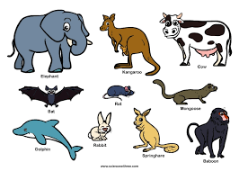

reptiles/ქვეწამრავლები
.jpeg)
Reptiles, as commonly defined, are a group of tetrapods with an ectothermic metabolism and amniotic
development. Living traditional reptiles comprise four orders: Testudines, Crocodilia, Squamata, and
Rhynchocephalia. About 12,000 living species of reptiles are listed in the Reptile Database.[2] The study
of the traditional reptile orders, customarily in combination with the study of modern amphibians, is called
herpetology.
mammals/ძუძუმწოვრები

A mammal (from Latin mamma 'breast')[1] is a vertebrate animal of the class Mammalia (/məˈmeɪli.ə/).
Mammals are characterised by the presence of milk-producing mammary glands for feeding their young,
a broad neocortex region of the brain, fur or hair, and three middle ear bones. These characteristics
distinguish them from reptiles and birds, from which their ancestors diverged in the Carboniferous Period
over 300 million years ago. Around 6,640 extant species of mammals have been described and divided into 27
orders.[2] The study of mammals is called mammalogy.
Sea Creatures/ზღვის ბინადრები
.jpeg)
Sea creatures are diverse marine animals, ranging from small microorganisms to large mammals like
whales, and are often categorized as either vertebrates (like fish and mammals) or invertebrates
(like jellyfish and crabs). Examples include sharks, dolphins, octopuses, sea turtles, and many
species of fish and crustaceans